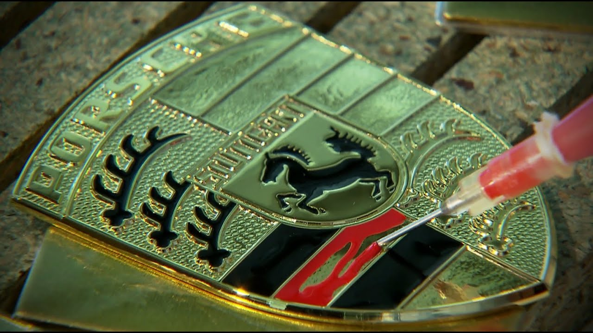
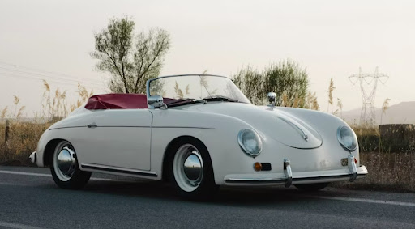
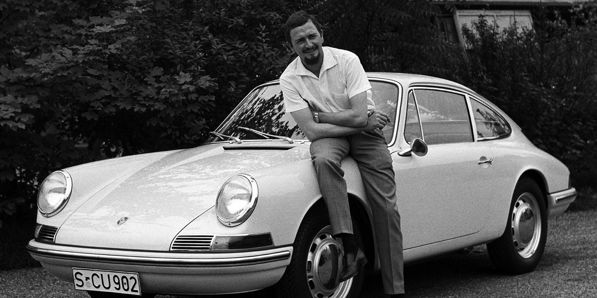
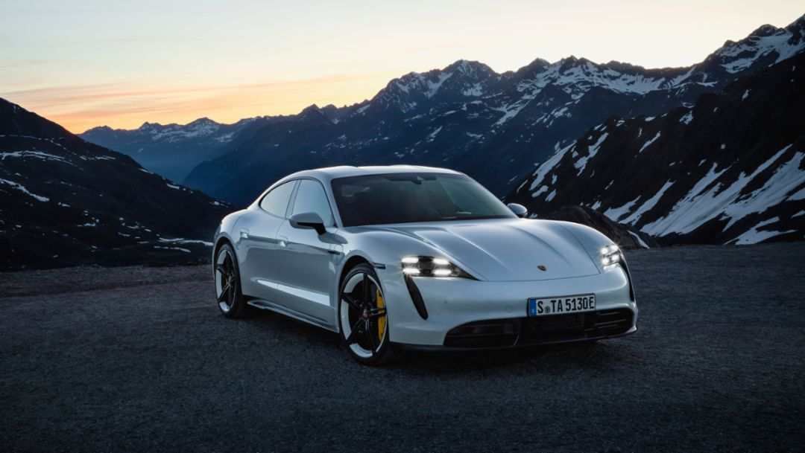

In the realm of automotive excellence, few brands evoke as much passion, innovation, and admiration as Porsche. Renowned for its sleek designs, precision engineering, and unparalleled performance, Porsche has carved out a unique niche in the automotive world since its inception. From humble beginnings in a small workshop to becoming one of the most prestigious manufacturers of luxury sports cars, the journey of Porsche is as captivating as the machines it produces.
The History of Porsche
From the cobbled streets of Stuttgart to the legendary racetracks of the world, the Porsche story is one of innovation, passion, and an unwavering pursuit of automotive excellence. It all began in 1931, when Professor Ferdinand Porsche, a visionary engineer with a long list of accomplishments under his belt, established his design firm. His first project, the Auto Union Grand Prix car, laid the foundation for Porsche's future - a future defined by performance, precision, and cutting-edge technology.
World War II temporarily shifted the focus, with Porsche contributing to the war effort. However, the embers of ambition never truly died. In 1948, Ferdinand's son, Ferry Porsche, unveiled the Porsche 356, a nimble sports car that captured the hearts of drivers worldwide. Its lightweight design, nimble handling, and air-cooled flat-four engine became synonymous with the Porsche spirit - a spirit that balanced everyday practicality with thrilling performance.
Over the decades, Porsche continued to push boundaries. The iconic 911, introduced in 1963, became the quintessential sports car, evolving through generations while retaining its core essence. Models like the 917 dominated racetracks, showcasing Porsche's engineering prowess and competitive spirit. And let's not forget the boxster and cayman, mid-engined marvels that brought Porsche's DNA to a wider audience.
However, Porsche isn't just about sports cars. The Cayenne, introduced in 2002, marked the brand's foray into the SUV segment, proving that practicality and performance could coexist seamlessly. The Panamera followed, blurring the lines between luxury sedan and sports car, and the Macan further established Porsche as a force to be reckoned within the SUV market.
Today, Porsche stands at the forefront of automotive innovation. The Taycan, their first all-electric sports car, marks a bold step into the future, proving that electrifying performance doesn't have to be a compromise. With the Macan EV on the horizon and continued advancements in hybrid and electric technology, Porsche is leading the charge towards a sustainable future without sacrificing the driving experience that has made them legendary.
The Porsche story is far from over. It's a testament to a company that dares to dream, defy expectations, and push the boundaries of what's possible. With a rich heritage, a relentless pursuit of excellence, and a commitment to sustainable innovation, Porsche continues to capture the imaginations and hearts of drivers around the world. The next chapter is sure to be just as thrilling as the last, and one thing is certain: the Porsche legend will continue to inspire generations to come.
-
Porsche: A Legacy of Excellence
-
The Early Years:
-
Birth of an Icon:
-
The Evolution Continues:
-
Classic Stories:
-
Modern Era:


The story of Porsche begins with its founder, Ferdinand Porsche. Born in 1875 in what is now the Czech Republic, Ferdinand possessed a natural talent for engineering from a young age. After honing his skills working for various automotive companies, including Austro-Daimler and Mercedes-Benz, Ferdinand established his own engineering consultancy in Stuttgart, Germany, in 1931. It was here that the foundations of the Porsche brand were laid. In 1938, Ferdinand Porsche unveiled the Volkswagen Beetle, a revolutionary car that would go on to become one of the most iconic vehicles in history. The success of the Beetle provided the impetus for Porsche to pursue its own automotive dreams.

In 1948, the first Porsche sports car was born: the Porsche 356. Designed by Ferdinand's son, Ferry Porsche, the 356
embodied the ethos of its creators - performance, style, and precision craftsmanship. With its lightweight construction
and rear-engine layout, the 356 delivered an exhilarating driving experience that captured the hearts of enthusiasts
around the world.
One of the most remarkable aspects of the 356 was its success in motorsport. From the outset, Porsche cars demonstrated
their racing pedigree, securing victories in prestigious events such as the Le Mans 24 Hours and the Targa Florio. These
triumphs not only showcased the performance capabilities of Porsche cars but also cemented the brand's reputation for
engineering excellence.

As the years passed, Porsche continued to push the boundaries of automotive innovation. In 1963, the legendary Porsche 911
made its debut, setting a new standard for sports car design and performance. With its distinctive silhouette and
air-cooled flat-six engine, the 911 became an instant classic, beloved by enthusiasts and critics alike.
Throughout the 20th century, Porsche expanded its lineup to include a diverse range of models, from the nimble 914 to the
luxurious 928. Each new addition to the Porsche family brought with it innovations in technology, design, and performance,
further solidifying the brand's position as a leader in the automotive world.

No history of Porsche would be complete without mentioning some of the most iconic cars and moments in the brand's storied
past. From the groundbreaking 959, which redefined the concept of a supercar with its advanced technology and blistering
speed, to the timeless elegance of the 550 Spyder, which captured the imagination of Hollywood legends like James Dean,
Porsche has produced some of the most coveted and celebrated automobiles in history.
One of the most enduring stories in Porsche lore is that of the 917. Introduced in 1969, the 917 was a true racing
thoroughbred, dominating the competition on the world's most challenging circuits. Its crowning achievement came in 1970
and 1971 when it secured back-to-back victories at the Le Mans 24 Hours, solidifying Porsche's status as a force to be
reckoned with in motorsport.

In the 21st century, Porsche continues to innovate and inspire with a lineup that includes iconic models such as the
Boxster, Cayman, and Panamera. The introduction of the all-electric Taycan marks a new chapter in Porsche's history,
combining the brand's tradition of performance with cutting-edge sustainable technology.
As Porsche looks to the future, one thing remains constant - its unwavering commitment to excellence. Whether on the
road or the racetrack, Porsche cars embody the spirit of innovation, passion, and precision that have defined the brand
for over seven decades.